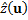
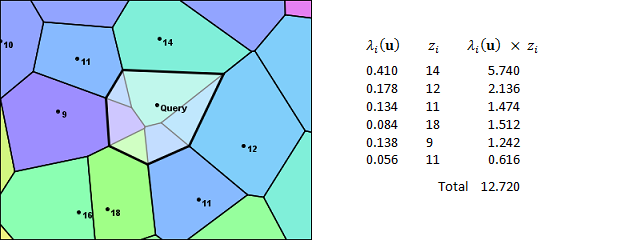

An Introduction to Natural Neighbor Interpolation
Introduction
Natural-neighbor interpolation is a fast, robust, and reliable technique for reconstructing a surface from irregularly distributed sample points. It faithfully preserves input data values and produces a continuous a surface as its output. It also provides good (though not perfect) continuity for slope. The technique is particularly useful for the kinds of unstructured data commonly encountered in geophysical applications where it yields smooth and visually appealing results.
Despite its advantages, the natural-neighbors technique is often overlooked. This article will attempt to help remedy that situation by providing background on the technique, describing its strengths and weaknesses, and giving examples of its application. The method of natural neighbors is one of the main interpolator implementations in the Tinfour software project. It is also provided as a feature of ArcGIS, GRASS GIS, SADA GIS, MATLAB, and other major applications. Some of these systems, such as MATLAB, refer to Natural Neighbor Interpolation as a kind of scattered interpolant and offer it as an option of their scattered interpolant tool sets. Users who wish to gain experience with the technique may do so by exploring these systems.
Background
The figure below illustrates the kind of data processing task at which natural neighbors excels. The numbered points represent surface temperature data collected across the Mediterranean Basin and Northern Africa over a one hour period in October of 2018. When we use the term "unstructured data" for sample sets such as the one shown, we are referring to the fact that there is no identifiable structure in the placement of the sample positions.
To create the figure, I used the Tinfour implementation of the natural-neighbors technique to interpolate a value for each pixel in the color-coded image. The smooth transition of values across the interpolated surface is one of the attractive qualities of the technique. In the introduction to this article, I made the claim that natural-neighbors interpolation is fast. There are 240 thousand pixels in the image. Interpolation values for each of them required 0.39 seconds running on a low-end laptop.
Before we go on, there are a couple of details about the source data that need clarification. First, the complete sample set that was used to create the figure does extend beyond the bounds of the visible image. Natural neighbors is strictly an interpolation technique, and only yields results for points that are properly surrounded by other sample points. It does not support extrapolation. If we were to zoom out on the map shown above, eventually we would encounter a convex outer boundary of the data set.
Second, when we think about natural-neighbor interpolation, it is useful to separate the position of the samples from the value of the samples. In the example above, I chose temperature as the phenomenon of interest because it uses a completely different unit system and coordinate scale than the Cartesian coordinates of the sample point positions. That choice emphasizes that the idea that the value can be thought of as a function of the position, but that position and value elements are separate entities. In the text that follows, I will often refer to position coordinates (x,y) and data value z. For the purposes of Natural-neighbor interpolation, the z can be any phenomenon that can be treated as a continuous, real-valued function of (x,y).
The Natural Neighbors
At first sight, the use of the term "natural" to describe an interpolation technique may seem a bold choice. It originated with the technique's inventor, Robin Sibson, who introduced it in a lively, opinionated article titled "A Brief Description of Natural Neighbor Interpolation" (Sibson, 1981). In the article, Mr. Sibson touches on his rationale for characterizing his technique as "natural" with the following description:
All interpolation methods involve to some extent the idea that the value of the interpolant at a point should depend more on data values at nearby data sites than at distant ones. In natural-neighbor interpolation the idea of 'neighbor' in a spatial configuration is formalized in a natural way and made quantitative, and the properties of the method depend on an apparently new geometric identity relating this quantitative measure of 'neighborliness' to position (Sibson, 1981, p. 25).
The unifying theme in Sibson's article is the idea that the natural-neighbor interpolation derives from fundamental geometric principles and not through an artificial construct. The use of natural-neighbor interpolation does not depend on arbitrarily specified "design parameters" or "decision criteria" to support its operation. This feature separates natural neighors from a number of other spatial interpolation techniques. For example, when dealing with large spatial data sets, many interpolators need to limit the number of samples used for a single calculation to a manageable subset of the whole. To do so, they depend on the specification of an input parameter indicating how many points to use (the "nearest N") or some limit to the distance at which points are accepted for an interpolation at target location (the "selection radius"). These artificial choices do not rise naturally from the data, but are specified through user inputs or default parameters. In Sibson's method, the selection of sample points and weighting factors arise in a natural way from the geometric configuration of the input data set.
The heart of the natural-neighbor interpolation is a mathematical structure known alternately as the Voronoi Diagram or the Dirichlet Tessellation (the first term is more popular, though Sibson preferred the second). At first glance, the Voronoi seems an unlikely candidate for any kind of interpolation. In its raw form, it presents a surface that is riddled with discontinuities and unsuited for evaluating slope or performing trend analysis. But in a 1980 paper, Sibson identified a property of the Voronoi that was to serve as the basis for the smooth transitions that were visible in the surface temperature image above (Sibson, 1980). I will have more to say about Sibson's paper later on. The principle it identifies really is the thing that makes natural neighbors work. But before we delve into the theory of natural neighbor interpolation, we need to cover the practical considerations. To that end, let's begin with a brief description of the Voronoi itself.
Nearest Samples and the Voronoi Diagram
One of the simplest ways to obtain a value for a query point is to use the value of the nearest sample. Using this approach, a set of query points in the immediate vicinity of a particular sample would all receive the same value. Thus, each sample point would generate a region of like values. The size and shape of these regions would depend on the geometry of the generating sample points. And, if we were to draw these regions in a graph, the resulting image would have the appearance of a Voronoi Diagram.
The figure below shows an example of a Voronoi Diagram. It was constructed from the same set of sample points that was used in the depiction of temperatures over the Mediterranean Basin. Each point in the data set is enclosed in a polygon. The polygons are color-coded based on the value associated with its generating sample point. These polygons contain the subset of all points on the plane that are closer to their generating points than to any other sample. The boundary edges in the diagram are all equidistant from the generating points in the adjacent polygons. Even though the colors used in the picture below are based on the same palette and scale that were applied in the temperature plot above, the two figures look quite different. This stark contrast is due to the discontinuous nature of the Voronoi surface.
Despite its discontinuous nature, the Voronoi has a useful characteristic that is readily apparent on inspection. Each edge in the Voronoi serves as a link between two generating sample points. Sibson used the collection of all edges that link to a particular sample as a way of selecting a set of points we can designate as its neighbors.
There are, of course, many ways to select a set of neighbors for a sample point. Why did Sibson consider the use of the Voronoi as a natural? While he didn't explicitly justify his choice of terminology, a few reasons seem likely. Perhaps most importantly, mathematicians have shown that any unique set of generating points will give rise to a unique Voronoi Diagram. So the natural-neighbors process is consistent and unambiguous: Given a set of sample points, there is only one Voronoi Diagram that they can ever generate. And, thus, there is one, and only one, assignment of neighbors. Furthermore, the layout of the cells in the Voronoi diagram ensures that for each sample point in the interior of the structure, the process will select neighbors in all directions. Thus, the selection ensures that a point on in the diagram will be fully surrounded by relevant samples. Finally, the construction is independent of the scale and magnitude of the coordinates of the sample points. It is purely the result of geometric relationships, and is unaffected by the selection of units of distance.
So far, I've been talking about how sample points can be collected together into sets of neighbors. You may be wondering how that helps us find the neighbors to a query point. That question brings us to the first step in the interpolation process. To find a set of relevant neighbors for an interpolation, the natural-neighbor technique begins by inserting the query point into the Voronoi Diagram. The figure below shows an example of an insertion. The new polygon generated by the query point is added to the structure. Some of the area from the neighbor polygons is transferred to the insertion polygon. And some of the edges covered by the new polygon are subsumed.
The Interpolation
The insertion of the query point into the Voronoi Diagram establishes a link between the query and the samples in the adjacent polygons. In Sibson's terminology, those samples are the natural neighbors. In the image above, they are labeled 14, 12, 11, 18, 16, 9, and 11, clockwise from the top. The natural-neighbor interpolation is a weighted average of the values of the neighbors selected in this method. So the next step in the interpolation process is to identify weights for these samples and then combine them with the sample values to get an estimate for the temperature at the query point
Looking at the figure, note that insertion cell incorporates a certain amount of area that was originally covered by its neighboring polygons. So, in effect, each of the neighboring cells contributed a certain fraction of the overall area of the new cell. Sibson's idea was to use these fractional values as the weights in a weighted average to compute an interpolated value.
Given a query point at coordinates (x,y), we can represent those coordinates using the vector u and letting

We use the vector u as a convenience. It gives coordinates of the query point in a compact form (all variables which are shown in bold face are vectors). The geometry of the insertion polygon, and the fractional contribution to its area by each of its neighbors, will depend on the position of the query point. Sibson used the Greek letter lambda to represent those fractional contributions. In effect, those lambda values are functions of u. We number the neighboring samples from one to N using the index variable i to distinguish them. The fractional contribution of each polygon can be written as
Note that the sum of all the lambda parameters will be one.
Finally, the weighted average for computing the natural-neighbor interpolation is just
Where  is an estimated value for the surface at the query position given by u .
To make this abstract expression of the natural-neighbor interpolation a bit more concrete, let's attach some numbers to the equation for . The values in the figure below show the intermediate products obtained when performing an interpolation for the query point used in this example. The fractional weights for each sample are taken in clockwise order starting at the 14-degree temperature value. As you can see, the weights in the lambda column correspond to the areas in the contributed fragments from each sample. If you add up the lambda weighting factors, you will find they total up 1. The sum of the products gives us the interpolated temperature of 12.720 degrees, which is the natural-neighbor interpolant at the query points shown in the figure.
Understanding something about the weighted average used in the natural-neighbor calculation gives us insight into how the interpolation will behave. For example, we know the lambda weights are all positive values in the range from 0 to 1 and always sum up to 1. From that, we can deduce that the output from a natural neighbor interpolation will never be smaller than the minimum sample value or larger than the maximum. And, with the lambdas falling in the range from 0 to 1, the calculation will be relatively free of the numeric precision issues that sometimes plague computer-based arithmetic.
Strengths of the Natural-Neighbor Interpolation
One advantage of the natural-neighbor approach is that the lambda parameters are completely independent of any choice of unit or measure that is used for the sample point coordinates. Because the lambdas are computed as the quotient of two areas, the units cancel out. It doesn't matter if the sample coordinates are given in parsecs or microns... Both the structure of the Voronoi and the values of the lambda weights depend solely on the spatial configuration of the query and sample positions.
A second advantage of the technique is that when the query is performed at the same coordinates as a sample point, the original value of the sample is preserved. As the query position moves closer to a sample, the weight of that sample approaches 1.0 while the weights of neighboring samples approach zero. Thus there is a continuous transition in value until it converges to the original.
A third advantage of the natural-neighbor interpolation is that it is resistant to biases that might be introduced due to the way some samples may cluster. Other interpolators, such as the Inverse Distance Weighting (IDW) technique and Geographically Weighted Regression, base their weighting factors on the distance of a sample from the query point. But, in doing so, they neglect the effects of the geometry of the sample that that the natural-neighbors technique includes through its area-based calculations. As Isaac Amidror stated, "area-based weights are superior to distance-based weights because they compensate for data density variation" (Amidror, 2002, p. 173).
To see the significance of variations in data density, consider the placement of the two temperature values in the lower-left corner of the images below. Conceivably, their 16 and 18 degree temperatures could represent some locally warm weather conditions. If we were to perform an interpolation at a position halfway between the 16 and 18-degree samples and the nearby 9-degree sample, the query point would be roughly equidistant from all three. So, in a distance-weighted approach, each of the three samples would have equal significance. The interpolation logic would just be a simple average of their values. It would yield a result of 14.33 degrees. But, in doing so, it would over-represent the "hot spot". In geospatial analysis terms, the interpolation would be skewed due to the spatial autocorrelation of the two closely placed samples. The picture below illustrates the area-based process used by the Natural Neighbor Interpolator, which results in a somewhat lower temperature of 12.96 degrees.
Weaknesses in the Natural-Neighbor Interpolation
One of the weaknesses of the natural-neighbor interpolation is that, while the surface it produces is continuous everywhere within its domain, the slope is not. In the examples above, we looked at the insertion of query points at two separate locations. As the insertion polygons showed, the selection of neighbors was not the same (nor would we expect it to be). Fortunately, the Natural Neighbor weight calculations automatically compensate for the transition from one set of neighbors to another when the query point moves from one part of the interpolation plane to another. For the most part, this compensation also works for slope effects. Unfortunately, there are places where it is not adequate to ensure a smooth transition of slope (e.g. first-derivative continuity). Point-discontinuities in slope occur at the sample positions. These are usually quite small and may appear as speckles in a high resolution plot. But, even if they are scarcely noticeable, they are still present.
Sibson was aware of this issue and devoted a significant part of his article to describing a technique for producing a first-derivative continuous interpolation. Other authors have pitched alternate ideas. The techniques are beyond the scope of this article, but are described in published literature and elsewhere on the web.
Why it Works
At this point, I've shown the results of the natural-neighbors technique plotted in the temperature plot of the Mediterranean Basin and presented some visual evidence that the interpolation works. But, as you consider the underlying technique for constructing area-weighting factors, you may find yourself asking whether it truly deserves the name "natural". The interpolation may yield attractive results, but the method does seem rather contrived. Why this particular combination of areas and properties? What distinguishes it from other, equally arbitrary, choices of value-blending algorithms?
It turns out that the lambda weights used in the natural-neighbor interpolation have a deep mathematical connection to the underlying geometry of the data. There is nothing arbitrary about them.
Earlier I mentioned that before Sibson introduced the natural-neighbor interpolation, he published a paper identifying a property of the Voronoi Diagram that would serve an important role in his interpolator. Sibson called it the Local Coordinates Property (Sibson, 1980, p. 152). He expressed the property using the Greek letter lambda. And, in his introduction to natural neighbors, he described it as "vital to what follows" (Sibson, 1981, p. 28).
Basically, the lambda weights that are calculated by inserting a query point into a Voronoi Diagram have the property that they can be used to produce the exact coordinates of the query point. Sibson showed that for query position
The following relationships hold.
It is no accident that these equations so closely resemble to computation for . They are the justification for the natural-neighbor interpolation. What the equations tell us is that the lambda factors quantify the spatial configuration of the sample points and query position. In the weighted sum, the lambdas transform the Cartesian coordinates of the sample points to the exact x and y coordinates of the query position u. The natural-neighbor technique extends ths idea to an interpolation by using the lambdas to approximate the value configuration of the samples and query. Thus, in the weighted sum for , the lambda weights transform the values of the samples to an estimated value at the location of the query point.
Natural Neighbors and Generalized Barycentric Coordinates
Although Sibson did not use the term, other authors have noted that the natural neighbors' lambda weights are actually an example of generalized Barycentric coordinates (Bobach, 2009, p. 34). Barycentric coordinates have been used by physicists and mathematicians for more than a hundred years (Möbius, 1827), but they have become much more widely known since Sibson's paper due to their use in computer graphics and imaging. For example, Barycentric coordinates are often used in image-morphing for video special effects. They also provide the basis for many of the rubber sheeting tools that are used in Geographic Information Systems to georectify aerial photographs and other imagery products.
The Tinfour Software Project's Implementation of Natural Neighbors
Readers who are familiar with software implementation issues may have wondered about the requirement to insert the query point into the Voronoi Diagram to obtain an interpolated value. Doing so would change the structure of the Voronoi. And, once changed, the structure would need to be restored to its original form before the next interpolation can be performed. Clearly, these operations would add overhead to the interpolation process and degrade its throughput. They would also have the consequence that the Voronoi structure could not be accessed on a read-only basis and, so, could not be shared between concurrent software processes. In a parallel-processing implementation, two processes would not be able to modify the same data structure simultaneously without the danger of corrupting its in-memory representation.
Tinfour avoids this overhead by never constructing a Voronoi Diagram at all. Instead, it uses a related structure, the Delaunay Triangulation, to model the Local Coordinates Property and calculate lambda weight factors. The set of the natural neighbors for the query point are found by using the Bowyer-Watson tessellation algorithm (Bowyer, 1981; Watson, 1981) which plays a key role in many Tinfour operations. And, because the Tinfour implementation accesses the underlying data structure on a read-only basis, it is possible to divide processing tasks between multiple interpolators running simultaneously. When running on a multi-core CPU, this approach can substantially accelerate processing for large jobs.
Incidentally, Adrian Bowyer was a colleague of Robin Sibson at the University of Bath at the time he wrote his "Brief Description of Natural Neighbor Interpolation". Sibson praises Bowyer's work warmly and cites it twice in the article (Sibson, 1981, p.31, p. 33). He also speculates that Bowyer's tessellation algorithm might serve to improve the performance of the natural-neighbor interpolation. Whether he envisioned the precise solution used by Tinfour is unknown, but his intuition was spot on.
Conclusion
Since the publication of Sibson's original article in 1981, natural-neighbor interpolation has been discussed in scores of research papers and implemented in dozens of commercial and open-source software systems. Some authors have extended it to higher-dimensions. Others have offered alternate solutions for improving the continuity properties for slope and higher-order derivatives.
I hope you will find this information about the natural-neighbor interpolation useful in trying to understand whether it is appropriate to your own requirements and, if so, in applying it effectively.
References
Amidror, Isaac (2002). Scattered data interpolation methods for electronic imaging systems: a survey. Journal of Electronic Imaging, April 2002, 11(2).
Bobach, T. (2008). Natural Neighbor Interpolation -- Critical Assessment and New Contributions (Doctoral dissertation). Retrieved from Publication Server of Kaiserlautern University of Technology, October 2018.
Bowyer, Adrian (1981). Computing Dirichlet tessellations. The Computer Journal 24(2), p. 162-166.
Möbius, A. F. (1827). Der barycentrische Calcul. Johann Ambrosius Barth, Leipzig.
Sibson, R. (1980). A vector identity for the Dirichlet tessellation. Mathematical Proceedings of the Cambridge Philosophical Society, 87(1), 151-155. doi:10.1017/S0305004100056589.
Sibson, R. (1981), A Brief Description of Natural Neighbor Interpolation. In Interpolating multivariate data, John Wiley & Sons, New York, 1981, pp. 21-36.
Watson, David F. (1981). Computing the n-dimensional Delaunay tessellation with application to Voronoi polytropes. The Computer Journal 24(2), p. 167-173.
Acknowledgements
The temperature data used for this article was derived from international data sources provided by Sonalysts, Inc. For more information, visit wXstation at Sonalysts, Inc.